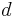
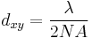
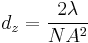
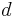
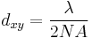
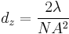

BigStitcher Interest points
Contents
Overview
Many processing steps of BigStitcher and Multiview-Reconstruction rely on the detection of Interest Points, i.e. bright or dark spots, in the images. The classical example is the alignment of multi-angle views by matching corresponding interest points in two images and aligning the points, and thus the images, to each other.
In Multiview Mode, interest point detection can be started by selecting the desired views, right-clicking and selecting the Processing › Detect Interest Points... option in the main menu.
Other uses of interest points are:
- Expert-mode stitching via Interest Points (click here for details)
- Affine Refinement of Tile registrations and Chromatic aberration correction via ICP (click here for details)
Furthermore, detecting sub-diffraction-sized beads is the default way of extracting a Point Spread Function (PSF) for (MultiView) Deconvolution.
Basic Parameters
In the first dialog, you can select the detection method and give a label to interest points that will be detected (e.g "beads" or "nuclei").
The type of interest point detection can be:
- Difference-of-Mean (Integral image based): slightly faster, but slightly less accurate
- Difference-of-Gaussian: more accurate, but slightly slower (can be GPU-accelerated with some work, however)
You can activate some advanced parameterization by selecting Define anisotropy for segmentation, Set minimal and maximal intensity or Limit amount of detections. This will unlock additional options in the next dialog (see below for detailed explanations).
If the views you selected contain multiple tiles or illumination directions, you can choose to group the views. The same minimum and maximum intensity will be used for all views in a group (see explanation below). This will virtually fuse the views into one image for the interest point detection preview, which can be very time consuming if you are not using a multi-resolution ImgLoader (i.e. if you have not re-saved the data as HDF5).
Advanced Parameters
In the next dialog, you will be asked for some more parameters for the interest point detection.
Under Subpixel localization, you can select whether to do subpixel-accurate detection of interest points using a 3-dimensional quadratic fit or not (the third option Gaussian mask localization fit is not implemented yet at the moment).
Interest point specification determines the size and threshold of spots for which to look. There are some presets, as well as:
- Advanced ..., which lets you manually set the values for threshold and sigma/radius.
- Interactive..., which lets you interactively change the values and display a preview of detections.
Next, you can choose to downsample your images (or use precomputed downsampled versions) to significantly speed up the interest point detection. Note that if you downsample a lot, you should use subpixel localization to counteract the corresponding inaccuracy.
If you chose to Set minimal and maximal intensity in the previous dialog, you will be asked for those values here. Their meaning is the following: If you do NOT set the minimum and maximum, the threshold you will select in the next step is relative to the min/max of each individual image. This might lead to more false positive and false negative detections if the individual images vary in brightness. Setting Minimal intensity and Maximal intensity causes the same values to be used for ALL images and counteract these problems. Note that if you chose to group views earlier, the minimum and maximum of the whole group will be used for each image in the group.
If you chose to Define anisotropy for segmentation in the previous dialog, you will be asked for Image sigmas in X, Y and Z here. If you acquired your images with pixel sizes and z-spacing of  (optimal sampling) with  being the resolution of you microscope ( and ), you can leave the default value of 0.5 here. Otherwise, increase the image sigma when you have oversampling (smaller pixel distances) or decrease it for undersampling (larger pixels). Note that it is only necessary to change the image sigmas if you over- or undersample differently in x,y and z. If you over- or undersampled by the same factor in x,y and z, you can also ignore these parameters and just set sigma/radius accordingly in the next step.
(optimal sampling) with  being the resolution of you microscope ( and ), you can leave the default value of 0.5 here. Otherwise, increase the image sigma when you have oversampling (smaller pixel distances) or decrease it for undersampling (larger pixels). Note that it is only necessary to change the image sigmas if you over- or undersample differently in x,y and z. If you over- or undersampled by the same factor in x,y and z, you can also ignore these parameters and just set sigma/radius accordingly in the next step.
If you chose to Limit amount of detections in the previous dialog, you will be asked for the Maximum number of detections (highest n) to keep and which Type of detections to use. This can be:
- Brightest: keep only the "brightest" detections (highest maxima or lowest minima).
- Weakest (above threshold): keep only the "weakest" detections that were not excluded via the threshold (lowest maxima or highest minima)
- Around median (of those above threshold): keep only the detections closest to the median absolute intensity (of the detections above the threshold)
Finally, when doing Difference-of-Gaussian detection, you can choose whether to compute the necessary convolution operations on the CPU or a GPU under "Compute on". GPU-accelerated detection requires a CUDA-capable NVIDA graphics card. You also have to compile the required libraries for your system first (see the corresponding GitHib pages for details). There is an approximate and an accurate version of the GPU-accelerated convolutions - the approximate version is slightly faster but might produce some artifacts around the edges of your images.

Interactive detection preview
If you opted for Interactive Interest point specification in the previous dialog, you will first be asked for one view (or view group) in which to preview the detection.
If you are using grouped views, you can specify how much percentage in z of the image should be displayed in the preview using the sliders.
Furthermore, if you are using grouped views, you can choose to Use min/max of this fusion for all groups (see above for details about the meaning of the min/max values).
If you click OK, the (fused) image will appear in an ImageJ-window together with a window in which the values for the interest point detection parameters can be specified. You can change Sigma 1 (Difference-of-Gaussian) or Radius 1 (Difference-of-Mean) to specify the size of objects to look as well as the Threshold (intensity of objects to look for) and whether to look for minima, maxima or both. The results will be previewed in the ImageJ-window. You can interactively go through the Z-stack and preview the detected interest points. To start the detection process in all selected views, click "Done".
GPU-accelerated Difference-of-Gaussian
If you chose to use GPU-accelerated detection and compiled the library for separable convolution from [[1]], you will have to go through a few more steps until the interest point detection starts.
First, you have to specify the CUDA directory in which to look for the compiled library (an .so file on Linux/Mac or a .dll on Windows).
Next, you have to select the actual library file to use (there might be multiple, be sure to pick the library for separable convolution, not the Fourier convolution used in Multi-View_Deconvolution).
In the last dialog, you can choose which Device (GPU) to use (if you have multiple) and how many Percent of GPU Memory to use. We advice to stick to ~80 percent to avoid collisions with other processes that might be using the GPU.
Click OK once more to start the interest point detection.
Go back to the main page